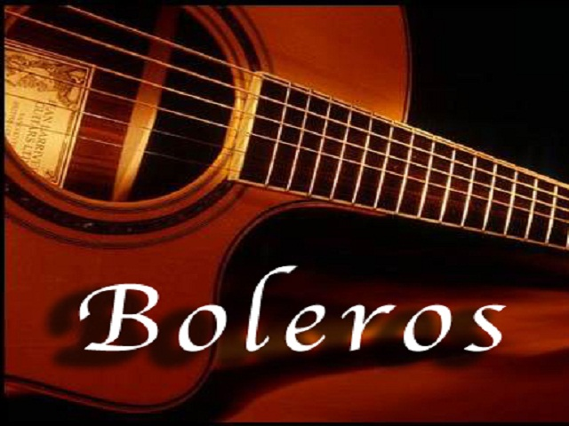
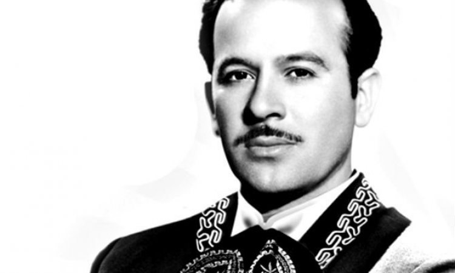
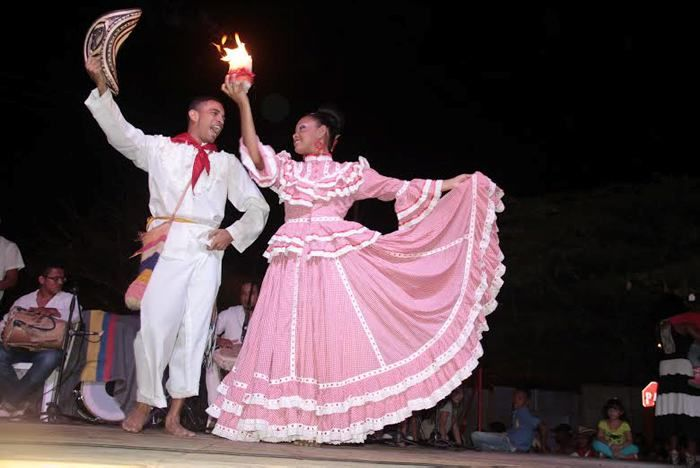

MUSICA
En los 60 y e años ateriores las musica mas escuchada era la siguiete:
- Boleros (sobre todo música de Tríos (como los Panchos), cuartetos (como los Dandys), y algunos cantantes solistas (como Javier Solís)

- Rancheras (el apogeo de José Alfredo Jiménez, Cuco Sánchez, Lola Beltrán, y se continuaba la estela de los inmortales que venían sonando desde los años 40s como Pedro Infante o Jorge Negrete ).

- Baladas y Rock en Español (Angélica María, César Costa, Enrique Guzmán, etc.)

- Música para bailar (casi toda de carácter tropical), Danzón, Cha·cha·chá, Guarachas, Sones, Mambo, Cumbias.
